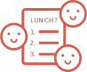

Collaborate

Create a poll where you and others can submit options on where to eat,
what to read, or any topic of your choice.
Vote
Share your poll and get others involved! Anyone with the shared link
can vote on options by rank or top choice.
Decide
Once the poll is closed, votes are tallied and everyone involved can view
the final decision. No more hassle!